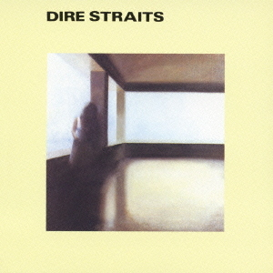
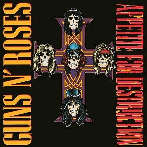
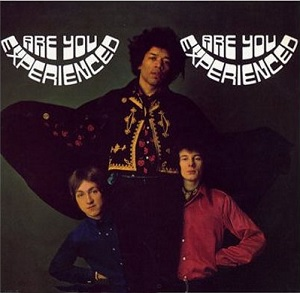
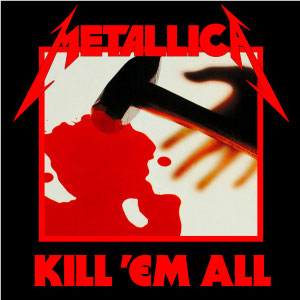

| classement | Groupe | premier album | date sortie | pochette | Wiki |
|---|---|---|---|---|---|
| 1 | Beatles | Please Please Me | 1963 | |
Cliquez ici |
| 2 | Dire Straits | Dire Straits | 1978 |  | Cliquez ici |
| 3 | Guns n roses | Appetite for destruction | 1987 |  | Cliquez ici |
| 4 | Jimi Hendrix Experience | Are you experienced ? | 1967 |  | Cliquez ici |
| 5 | Led Zeppelin | Led Zeppelin | 1969 | |
Cliquez ici |
| 6 | Metallica | Kill 'Em All | 1983 |  | Cliquez ici |
| 6 | Pink Floyd | The Piper at the Gates of Dawn | 1967 | |
Cliquez ici | Groupe | premier album | date sortie | pochette | Wiki |